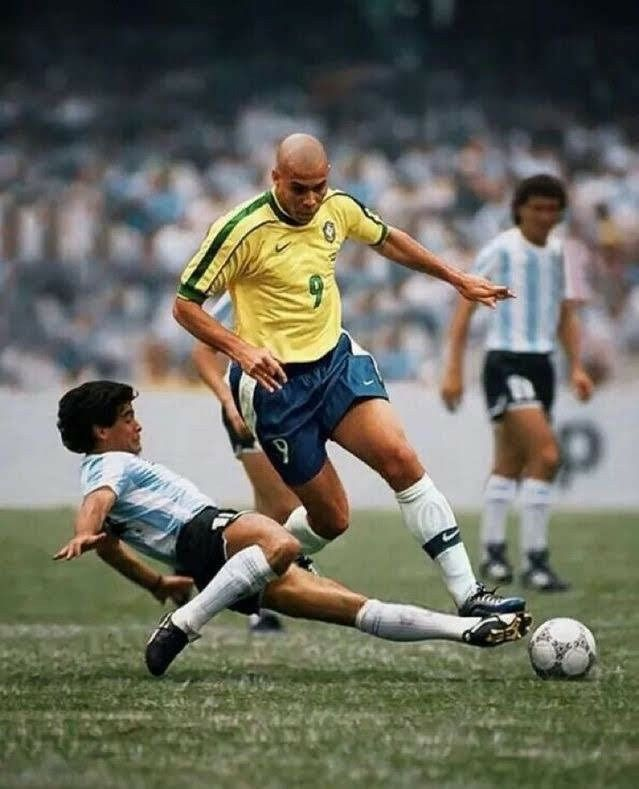

O futebol brasileiro, que encantou o mundo, ainda é lembrado por sua beleza e pela habilidade única dos jogadores, fazendo até os que não gostavam do esporte assistirem.
Essas seleções mostram a evolução do futebol brasileiro ao longo dos anos, adaptando-se às mudanças no estilo de jogo mundial, mas sempre mantendo a busca pela vitória e pelo espetáculo.
Na sala de aula, pessoas comentam e comentam até hoje sobre o futebol brasileiro, sobre como somos apaixonados por esse esporte e como ele marca a nossa identidade.
"O FUTURO DO FUTEBOL ESTÁ NO BRASIL"